BTS Services Informatiques aux Organisations (SIO)
Développement d'une application pour le Service statistique Académique du Rectorat de Paris.
Le Service a rencontré une situation où des élèves étaient enregistrés en double dans notre base de données.
Pour remédier à cette situation, j'ai créer une application qui permet trier tout les élève conserné et ensuite automatiser un système de messagerie qui créer les courriels électronique et contacter les établissements concernés afin qu'ils effectuent les corrections nécessaires dans leurs systèmes respectifs.
- Stage de 1ère année : DAFPIC (Délégué académique à la formation professionnelle initiale et continue) au Réctorat de Paris.
Durée du stage : 6 semaines
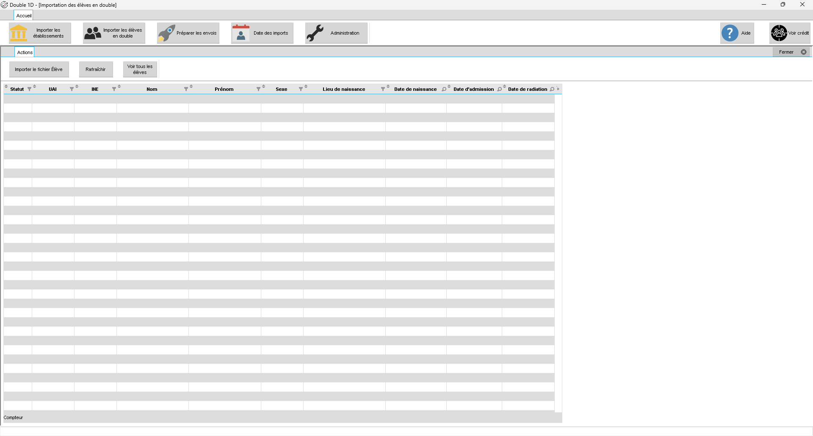
Table des élèves doublons.
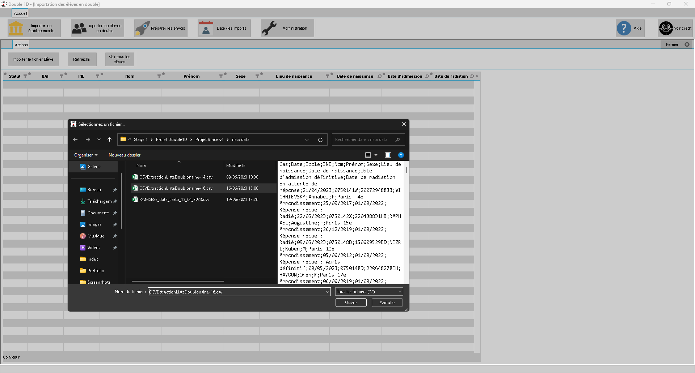
Démonstration seléction du fichier d'import (élèves).
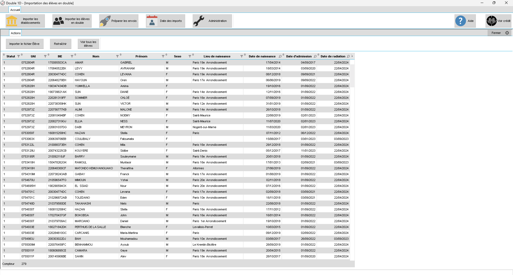
Table des élèves, une fois importé.
Table de tous élèves (du fichier), quel que soit leurs status.
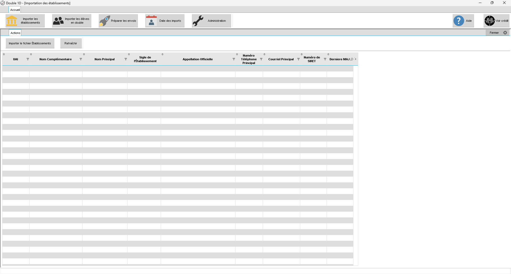
Table des établissements.
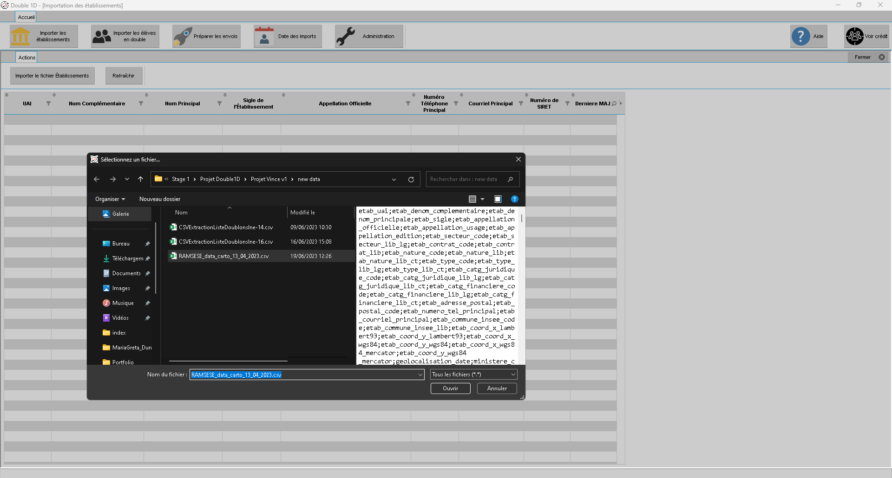
Démonstration seléction du fichier d'import (Etablissements).
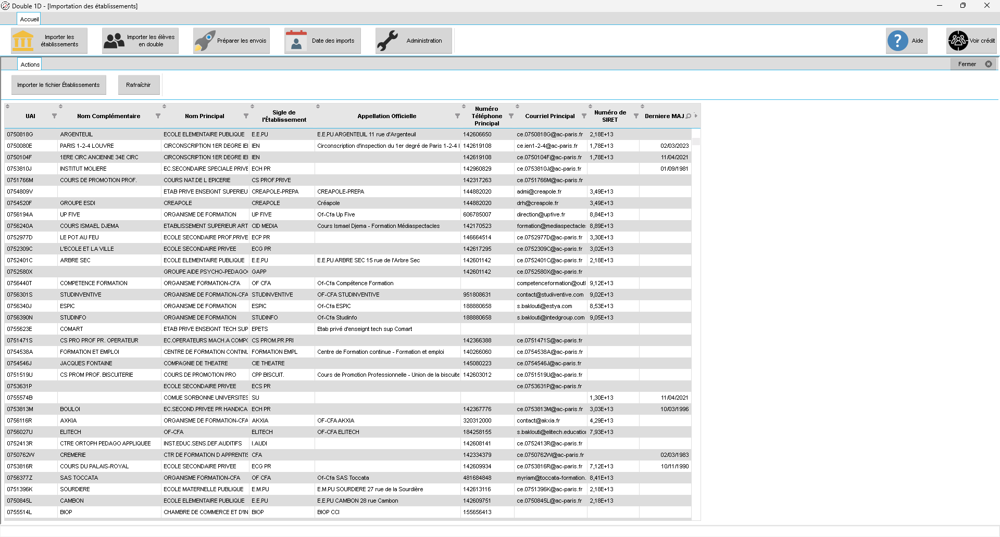
Table des établissements, une fois importé.
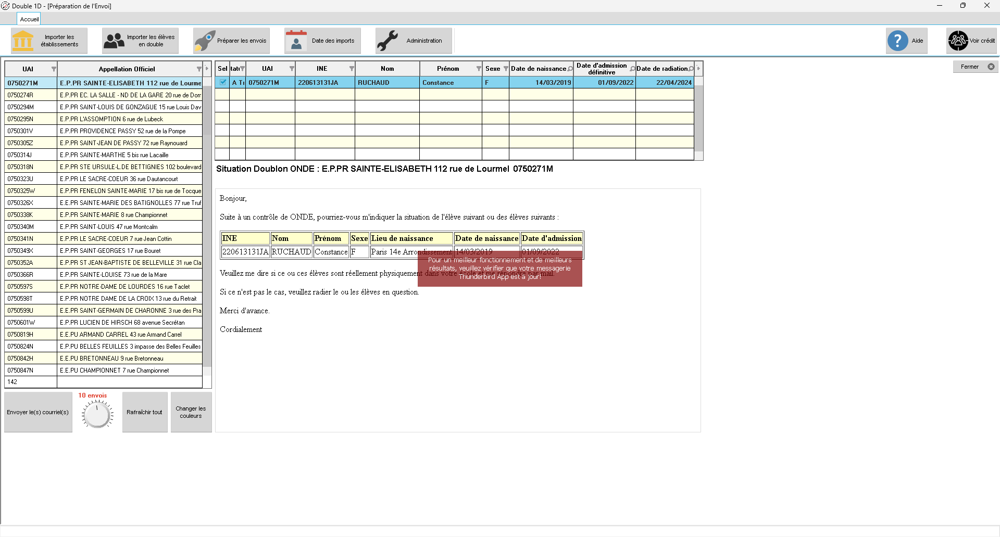
Apperçu de la fenêtre, permettant d'envoyer les courriels.
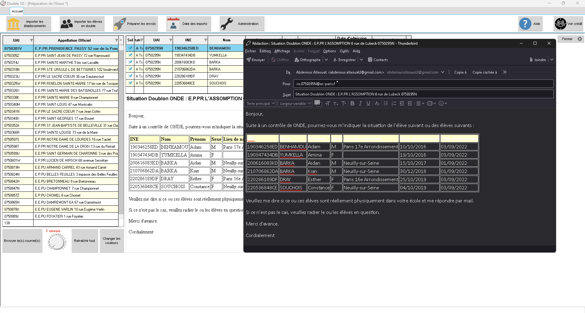
Géneration du premier courriel.
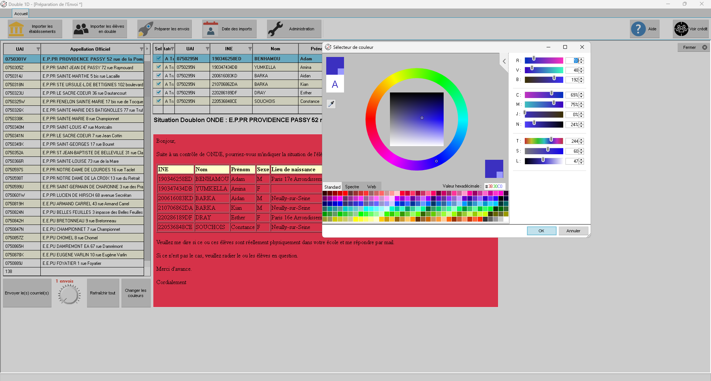
Selecteur de couleur, pour le courriel.
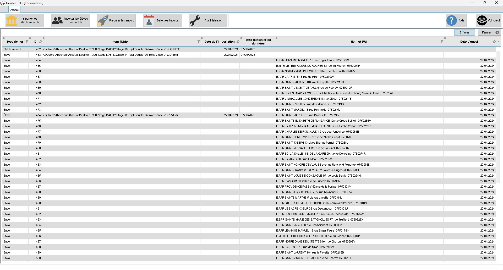
Historique de l'activité de l'application.
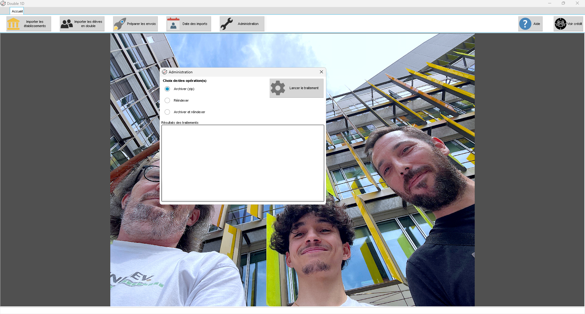
Apperçu du boutton d'administration.
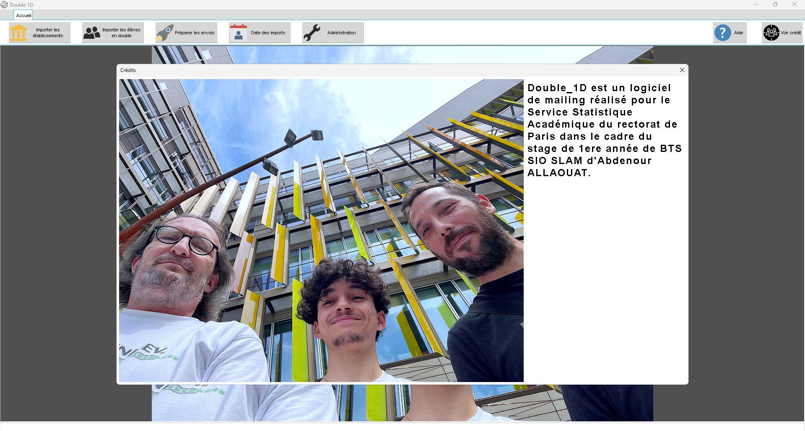
Apperçu de la fenêtre remerciements.